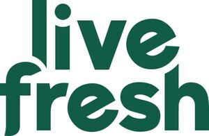

Trade Mark Journal No.2026/011 13 March 2026
WO0000001790191 (5,9,29,30,32,35)
Office of origin: European Union Intellectual Property Office (EUIPO)
Date of International Registration:23 January 2024
Date of designation in the UK:
3 November 2025

The mark contains the colour dark green.
- Class 5
- Protein supplement shakes; dietary and nutritional preparations.
- Class 9
- Software downloadable from the internet; downloadable software; mobile software; software for mobile phones; software for smartphones; software for tablet computers; software and applications for mobile devices; downloadable applications for use with mobile devices; health monitoring software.
- Class 29
- Meat; fish, not live; game, not live; meat extracts; vegetables, dried; vegetables, cooked; fruit, preserved; frozen fruits; jellies for food; jams; compotes; eggs; milk; cheese; butter; yoghurt; milk products; oils for food; edible fats; dried fruit; fruit, stewed; vegetables, preserved; frozen vegetables; soya [prepared]; processed soybeans; dried soya beans; powdered egg whites; prepared meals consisting principally of vegetables; prepared vegetable dishes; frozen prepared meals consisting principally of vegetables.
- Class 30
- Coffee; tea; cocoa; artificial coffee; rice; pasta; noodles; tapioca; sago; flour; cereal preparations; bread; pastries; chocolate; ice cream; sherbets [ices]; sorbets [water ices]; sugar; honey; golden syrup; yeast; baking powder; salt; seasonings; spices; preserved herbs; vinegar; sauces; ice [frozen water]; porridge; oat-based food; cereal based foodstuffs for human consumption; foodstuffs made from oats; oat flakes.
- Class 32
- Beer; non-alcoholic beverages; mineral water [beverages]; aerated water; juices; syrups and other non-alcoholic preparations for making beverages; flavoured carbonated beverages.
- Class 35
- Wholesale services in relation to non-alcoholic beverages; retail services in relation to non-alcoholic beverages; wholesale services in relation to preparations for making beverages; retail services in relation to preparations for making beverages.
LiveFresh GmbH
Representative: Grube Pitzer Konnertz-Häußler Rechtsanwälte, Bunsenstraße 10, 51647 Gummersbach, GERMANY